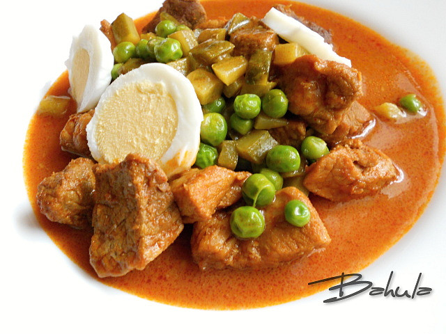

Tradiční české vepřové ragú s hráškem, sterilovanými okurkami, vejcem natvrdo a zjemněné smetanou. Lahodná kombinace chutí, ideální k rýži nebo knedlíku.
Maso nakrájíme na kostky. Cibuli nasekáme najemno a restujeme na sádle dozlatova.
Přidáme mletou papriku, necháme krátce zpěnit, přidáme maso a krátce restujeme, dokud se nezatáhne.
Podlijeme polovinou vývaru a dusíme pod pokličkou, dokud maso nezměkne.
Maso vyjmeme a šťávu vydusíme na tuk. Zaprášíme moukou, osmahneme ji a zalijeme zbytkem vývaru. Dobře promícháme a vaříme asi 10 minut.
Omáčku přecedíme, podle chuti osolíme, přidáme smetanu a krátce povaříme.
Do omáčky vrátíme maso, přidáme uvařený hrášek, nakrájené okurky a vejce natvrdo.
Podáváme přelité omáčkou s rýží nebo houskovým knedlíkem.